k8s：自动部署、扩缩和管理容器化应用程序系统
1. k8s架构
整体架构图
官方提供的整体架构图如下：
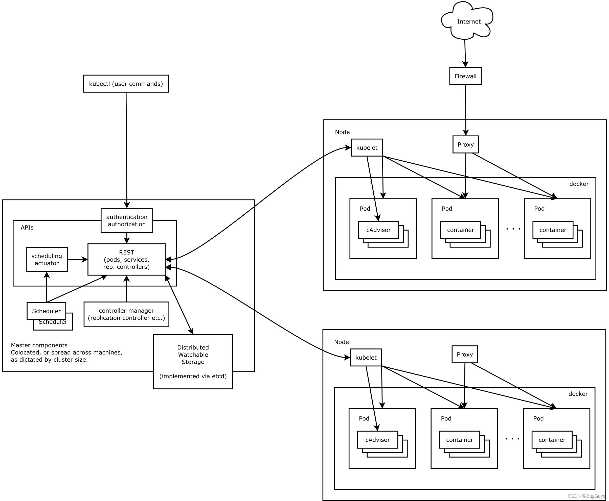主节点既可以做主节点，也可以做从节点，最小要求一主一从作为学习要求。
下边是对官方的结构图进行解释后的架构图：
通过kubectl或者可视化ui操作k8s对外开放的api-server，即从节点的kubelet去管理从节点或pod。
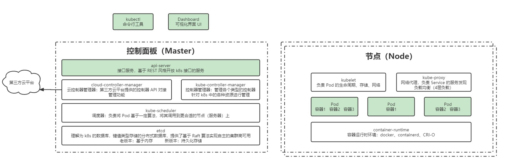核心组件（主节点，或者叫控制面板）：
api-server 提供了资源操作的唯一入口，并提供认证、授权、访问控制、API 注册和发现等机制；
etcd 保存了整个集群的状态；
etcd是构建一个高可用的分布式键值(key-value)数据库。etcd内部采用
raft协议作为一致性算法，etcd基于Go语言实现 ;主要用于共享配置和服务发现 ;controller manager 负责维护集群的状态，比如故障检测、自动扩展、滚动更新等；
scheduler 负责资源的调度，按照预定的调度策略将 Pod 调度到相应的机器上；
从节点的组件：
- kubelet 负责维护容器的生命周期，同时也负责 Volume（CSI）和网络（CNI）的管理；
- Container runtime 负责镜像管理以及 Pod 和容器的真正运行（CRI）；
- kube-proxy 负责为 Service 提供 cluster 内部的服务发现和负载均衡，ISO提出的OSI参考模型（Open System Interconnection Reference Model）将网络通信的复杂过程分解成7层活动，这通常被称为网络通信的七层模型，而此处为4层负载；
组件间协议&分层架构图
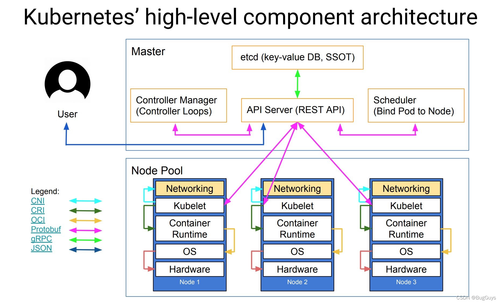
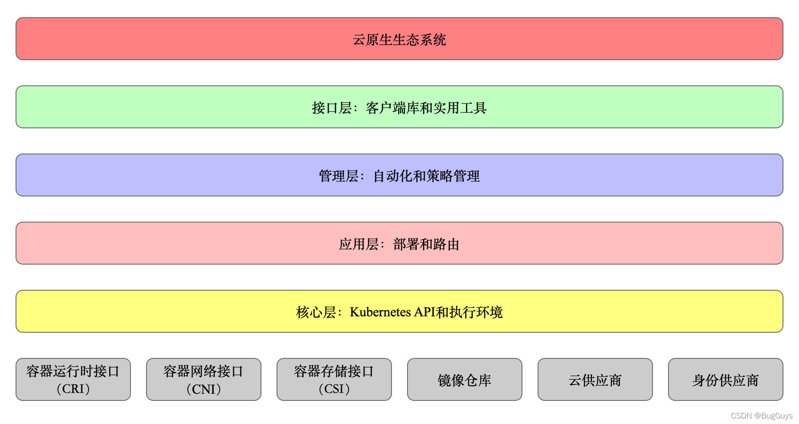
CNI: CNI是Container Network Interface的是一个标准的，通用的接口 ;用于连接容器管理系统和网络插件。提供一个容器所在的network namespace，将network interface插入该network namespace中（比如veth的一端），并且在宿主机做一些必要的配置（例如将veth的另一端加入bridge中），最后对namespace中的interface进行IP和路由的配置。现有解决方案：flannel，calico，weave。
在架构中有看到，kubelet通过api-server操作从节点，即通过网络接口来实现。
参考链接：https://blog.csdn.net/zhonglinzhang/article/details/82697524
CRI： 容器运行时接口(Container Runtime Interface)；CRI包含了一组protocol buffers，gRPC API，相关的库; 提供可插拔的容器运行时 ;k8s节点的底层由一个叫做“容器运行时”的软件进行支撑，它负责比如启停容器这样的事情；Docker是K8s中最常用的容器运行时。
docker是容器管理中较好的使用方案，而容器运行时不一定只能使用docker。
CSI：CSI（Container Storage Interface）是一个用于为Kubernetes集群提供持久化存储的标准接口。它允许第三方存储供应商（如云提供商和存储厂商）创建和管理持久化存储的插件，使得这些存储解决方案能够无缝集成到Kubernetes集群中，为Pod提供持久化存储服务。
OCI： 围绕容器的格式和运行时制定一个开放的工业化标准,并推动这个标准,保持容器的灵活性和开放性,容器能运行在任何的硬件和系统上，容器不应该绑定到特定的客户机或编排堆栈,不应该与任何特定的供应商紧密关联,并且可以跨多种操作系统；
视频介绍：什么是K8S？
参考链接1：Kubernetes(k8s)是什么？架构是怎么样的？
参考链接2：docker是什么？和kubernetes(k8s)是什么关系？_
2. k8s技术概念
无状态应用与有状态应用
无状态应用不能具备存储数据的组件，由于再部署后会缺乏数据，因此只能是有状态应用。
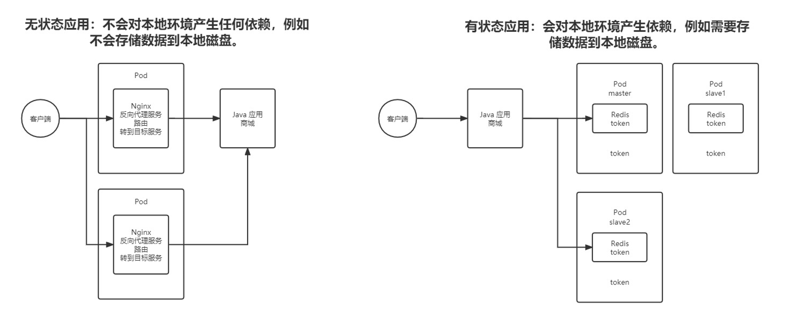资源分类：集群级、命名空间级、元数据级
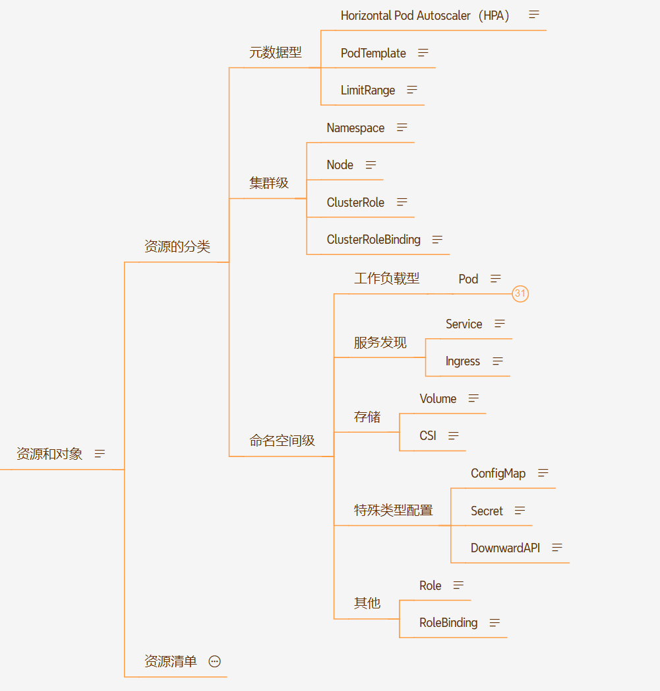
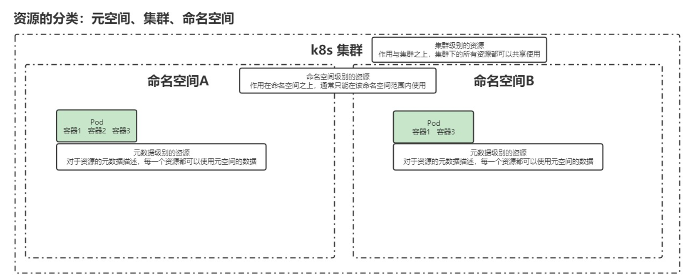
元数据类型
Horizontal Pod Autoscaler（HPA）
Pod 自动扩容：可以根据 CPU 使用率或自定义指标（metrics）自动对 Pod 进行扩/缩容。
- 控制管理器每隔30s（可以通过–horizontal-pod-autoscaler-sync-period修改）查询metrics的资源使用情况
- 支持三种metrics类型
- 预定义metrics（比如Pod的CPU）以利用率的方式计算
- 自定义的Pod metrics，以原始值（raw value）的方式计算
- 自定义的object metrics
- 支持两种metrics查询方式：Heapster和自定义的REST API
- 支持多metrics
PodTemplate
Pod Template 是关于 Pod 的定义，但是被包含在其他的 Kubernetes 对象中（例如 Deployment、StatefulSet、DaemonSet 等控制器）。控制器通过 Pod Template 信息来创建 Pod。
LimitRange
可以对集群内 Request 和 Limits 的配置做一个全局的统一的限制，相当于批量设置了某一个范围内（某个命名空间）的 Pod 的资源使用限制。
pod（命名空间级）
pod介绍
pod属于命名空间级别的资源，为什么是要有pod参照上一节架构的内容。
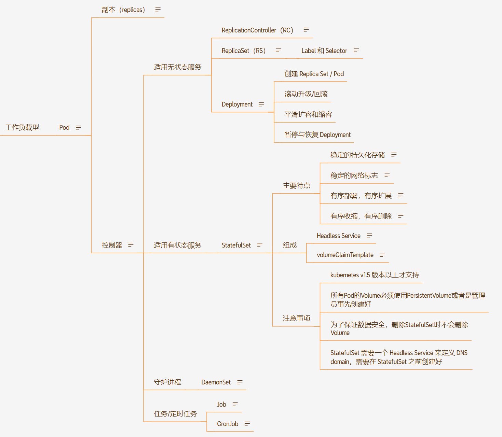
Pod（容器组）是 Kubernetes 中最小的可部署单元。一个 Pod（容器组）包含了一个应用程序容器（某些情况下是多个容器）、存储资源、一个唯一的网络 IP 地址、以及一些确定容器该如何运行的选项。Pod 容器组代表了 Kubernetes 中一个独立的应用程序运行实例，该实例可能由单个容器或者几个紧耦合在一起的容器组成。
Docker 是 Kubernetes Pod 中使用最广泛的容器引擎；Kubernetes Pod 同时也支持其他类型的容器引擎。
Kubernetes 集群中的 Pod 存在如下两种使用途径：
一个 Pod 中只运行一个容器。”one-container-per-pod” 是 Kubernetes 中最常见的使用方式。此时，您可以认为 Pod 容器组是该容器的 wrapper，Kubernetes 通过 Pod 管理容器，而不是直接管理容器。
一个 Pod 中运行多个需要互相协作的容器。您可以将多个紧密耦合、共享资源且始终在一起运行的容器编排在同一个 Pod 中。
副本
先引入“副本”的概念——一个 Pod 可以被复制成多份，每一份可被称之为一个“副本”，这些“副本”除了一些描述性的信息（Pod 的名字、uid 等）不一样以外，其它信息都是一样的，譬如 Pod 内部的容器、容器数量、容器里面运行的应用等的这些信息都是一样的，这些副本提供同样的功能。
控制器
控制器就是在第一节整体架构中提到的controller manager 。controller manager 负责维护集群的状态，比如故障检测、自动扩展、滚动更新等，在本节的组成图中又有更细的划分。
Pod 的“控制器”通常包含一个名为 “replicas” 的属性。“replicas”属性则指定了特定 Pod 的副本的数量，当当前集群中该 Pod 的数量与该属性指定的值不一致时，k8s 会采取一些策略去使得当前状态满足配置的要求。
RC
Replication Controller 简称 RC，RC 是 Kubernetes 系统中的核心概念之一，简单来说，RC 可以保证在任意时间运行 Pod 的副本数量，能够保证 Pod 总是可用的。如果实际 Pod 数量比指定的多那就结束掉多余的，如果实际数量比指定的少就新启动一些Pod，当 Pod 失败、被删除或者挂掉后，RC 都会去自动创建新的 Pod 来保证副本数量，所以即使只有一个 Pod，我们也应该使用 RC 来管理我们的 Pod。可以说，通过 ReplicationController，Kubernetes 实现了 Pod 的高可用性。
RC （ReplicationController ）主要的作用就是用来确保容器应用的副本数始终保持在用户定义的副本数 。即如果有容器异常退出，会自动创建新的 Pod 来替代；而如果异常多出来的容器也会自动回收（已经成为过去时），在 v1.11 版本废弃。
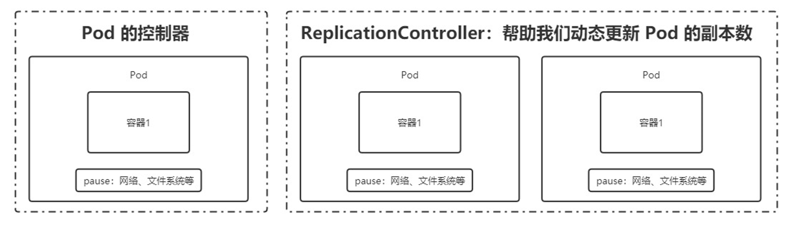
RS（学习）
Kubernetes 官方建议使用 RS（ReplicaSet ） 替代 RC （ReplicationController ） 进行部署，RS 跟 RC 没有本质的不同，只是名字不一样，并且 RS 支持集合式的 selector。
label （标签）是附加到 Kubernetes 对象（比如 Pods）上的键值对，用于区分对象（比如Pod、Service）。 label 旨在用于指定对用户有意义且相关的对象的标识属性，但不直接对核心系统有语义含义。 label 可以用于组织和选择对象的子集。label 可以在创建时附加到对象，随后可以随时添加和修改。可以像 namespace 一样，使用 label 来获取某类对象，但 label 可以与 selector 一起配合使用，用表达式对条件加以限制，实现更精确、更灵活的资源查找。
label 与 selector 配合，可以实现对象的“关联”，“Pod 控制器” 与 Pod 是相关联的 —— “Pod 控制器”依赖于 Pod，可以给 Pod 设置 label，然后给“控制器”设置对应的 selector，这就实现了对象的关联。
总结为RS在RC的基础上进行灵活性的匹配pod。
Deployment（无状态、工作最常用）
Deployment 为 Pod 和 Replica Set 提供声明式更新。
你只需要在 Deployment 中描述你想要的目标状态是什么，Deployment controller 就会帮你将 Pod 和 Replica Set 的实际状态改变到你的目标状态。你可以定义一个全新的 Deployment，也可以创建一个新的替换旧的 Deployment。
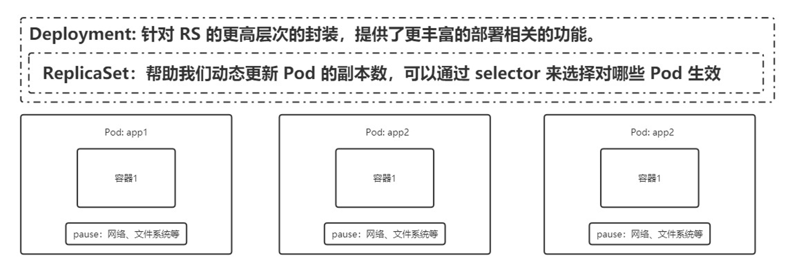
同时Deployment采用灰度发布，在新的pod中逐一复制同一容器，一直处于高可用状态。
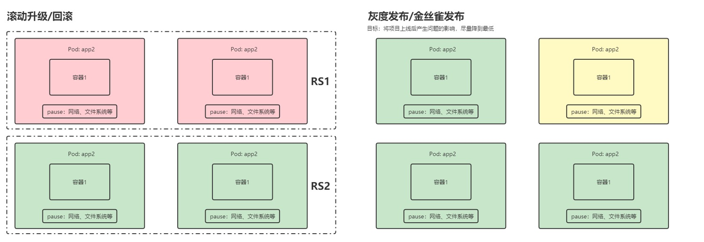
StatefulSet（有状态应用）
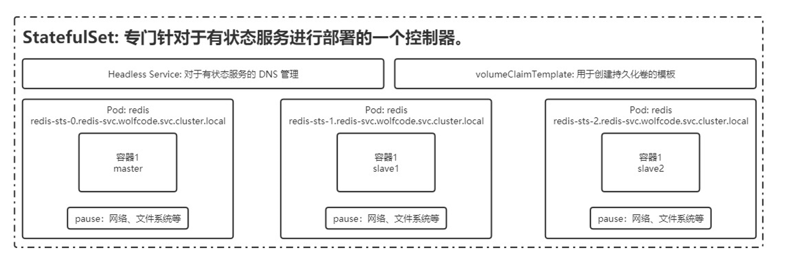
Headless Service
- 没有Cluster IP：Headless Service在创建时，通过将
spec.clusterIP设置为None，来表明它不需要一个集群内部的固定IP地址。 - 为Pod提供稳定的网络标识：在StatefulSet中，Headless Service为每个Pod提供一个基于其序号索引的稳定DNS名称。例如，如果StatefulSet名称为
my-service，Pod的序号为0，那么Pod的DNS名称将是my-service-0.my-service.namespace.svc.cluster.local。 - 支持DNS解析：Kubernetes的DNS服务会为Headless Service中的每个Pod返回一个DNS A记录（Address Record），这些记录指向Pod的实际IP地址。这样，即使Pod的IP地址发生变化，通过DNS名称仍然可以访问到正确的Pod。
- 支持负载均衡：虽然Headless Service不提供像Cluster IP那样的内置负载均衡，但它可以通过DNS返回多个A记录，客户端可以自行实现负载均衡逻辑。
- 适用于有状态服务：Headless Service通常与StatefulSet一起使用，因为StatefulSet需要为每个Pod提供稳定的网络标识，而Headless Service正好满足这一需求。
- 支持端口映射：就像常规的Service一样，Headless Service也可以定义端口映射，将服务的端口映射到Pod的端口。
volumeClaimTemplate
持久化存储：通过volumeClaimTemplates，StatefulSet为每个Pod创建独立的PersistentVolumeClaim（PVC），确保每个Pod都有自己的存储空间，数据不会因为Pod的重启而丢失。
DaemonSet（守护进程）
DaemonSet 保证在每个 Node 上都运行一个容器副本，常用来部署一些集群的日志、监控或者其他系统管理应用。典型的应用包括：
- 日志收集，比如 fluentd，logstash 等
- 系统监控，比如 Prometheus Node Exporter，collectd，New Relic agent，Ganglia gmond 等
- 系统程序，比如 kube-proxy, kube-dns, glusterd, ceph 等
- 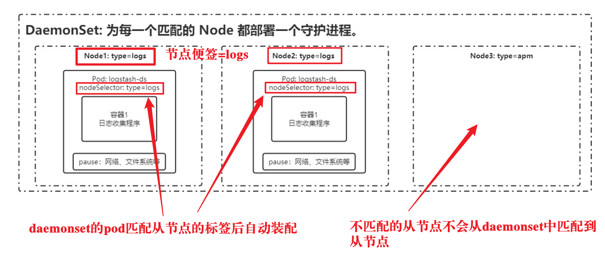
pod与docker间的对比
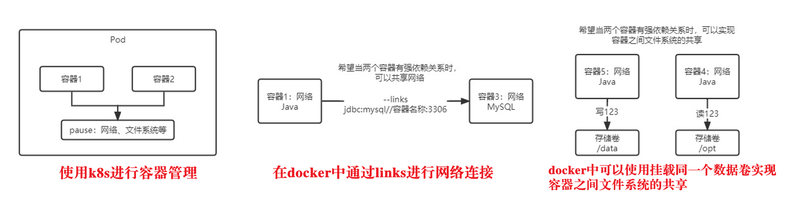
在pod中，pause是pod的初始容器，访问其他具体的容器都是通过pause容器进行访问的。
为什么需要pod？
视频中提到的Pod包含多个容器，那么为什么需要使用多个容器？为何需要pod这种容器？为何不直接使用容器？为何甚至需要同时运行多个容器？难道不能简单地把所有进程都放在一个单独的容器中吗？
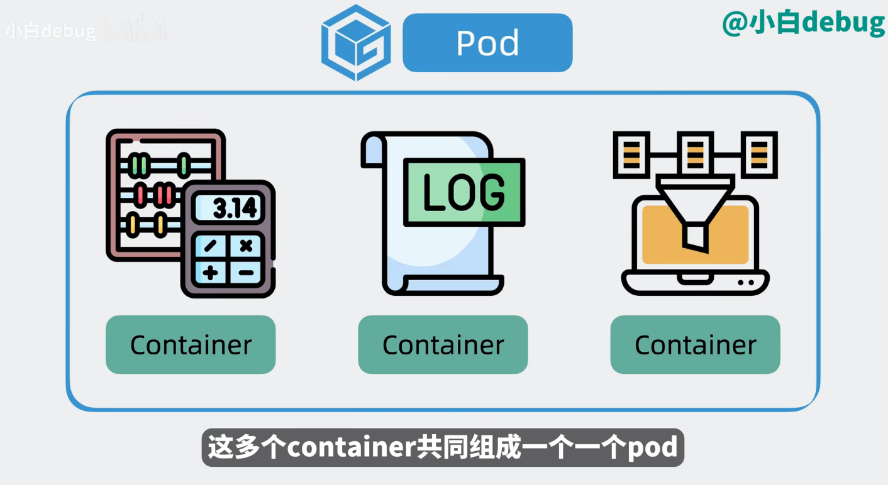
为什么多个容器比单个容器中包含多个进程要好？
想象一个由多个进程组成的应用程序，无论是通过ipc（进程间通信）还是本地存储文件进行通信，都要求它们运行于同一台机器上。在Kubernetes中，我们经常在容器中运行进程，由于每一个容器都非常像一台独立的机器，此时你可能认为在单个容器中运行多个进程是合乎逻辑的，然而在实践中这种做法并不合理。
容器被设计为每个容器只运行一个进程（除非进程本身产生子进程）。如果在单个容器中运行多个不相关的进程，那么保持所有进程运行、管理它们的日志等将会是我们的责任。例如，我们需要包含一种在进程崩溃时能够自动重启的机制。同时这些进程都将记录到相同的标准输出中，而此时我们将很难确定每个进程分别记录了什么。
pod设计为多个容器的集合。由于不能将多个进程聚集在一个单独的容器中，我们需要另一种更高级的结构来将容器绑定在一起，并将它们作为一个单元进行管理，这就是pod背后的根本原理。
在包含容器的pod下，我们可以同时运行一些密切相关的进程，并为它们提供（几乎）相同的环境，此时这些进程就好像全部运行于单个容器中一样，同时又保持着一定的隔离。这样一来，我们便能全面地利用容器所提供的特性，同时对这些进程来说它们就像运行在一起一样，实现两全其美。
pod实际在docker中是docker compose的概念，参考视频：docker是什么？和kubernetes(k8s)是什么关系？_
服务发现
service
“Service” 简写 “svc”。Pod 不能直接提供给外网访问，而是应该使用 service。Service 就是把 Pod 暴露出来提供服务，Service 才是真正的“服务”，它的中文名就叫“服务”。
可以说 Service 是一个应用服务的抽象，定义了 Pod 逻辑集合和访问这个 Pod 集合的策略。Service 代理 Pod 集合，对外表现为一个访问入口，访问该入口的请求将经过负载均衡，转发到后端 Pod 中的容器。
类似微服务的eureka和nacos的概念。nacos负责微服务之间的调用，而service负责k8s集群内节点之间的调用，是横向流量。
Ingress
Ingress 是 Kubernetes 的一种管理外部访问应用的资源对象，它允许用户通过一组规则来管理进入集群的 HTTP 和 HTTPS 流量。
Ingress 可以提供外网访问 Service 的能力。可以把某个请求地址映射、路由到特定的 service（ingress-nginx进行路由）。
ingress 需要配合 ingress controller 一起使用才能发挥作用，ingress 只是相当于路由规则的集合而已，真正实现路由功能的，是 Ingress Controller，ingress controller 和其它 k8s 组件一样，也是在 Pod 中运行。
ingress类似nginx进行路由和负载均衡，从用户访问具体服务的时候进行代理、负载均衡、路由跳转等，是纵向流量。
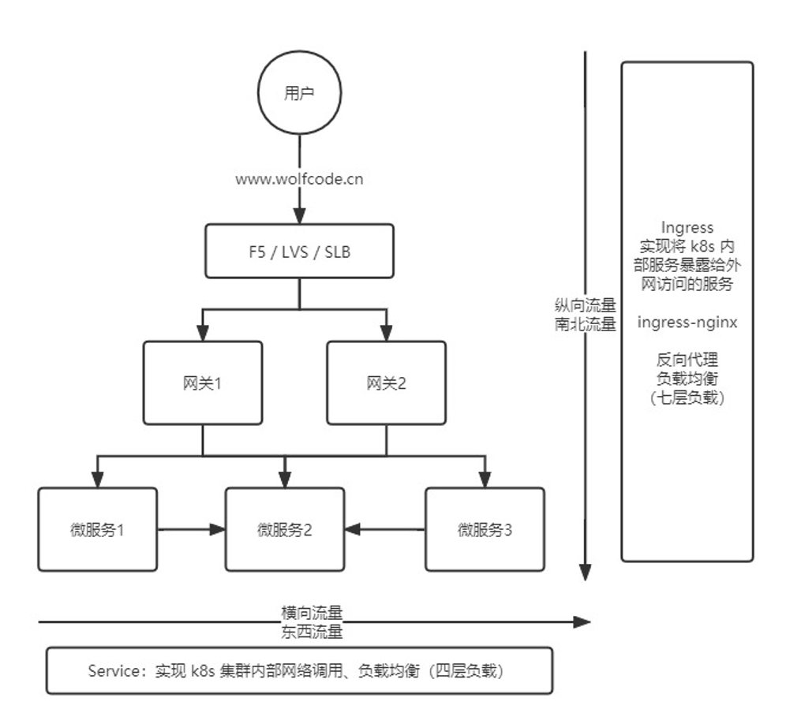 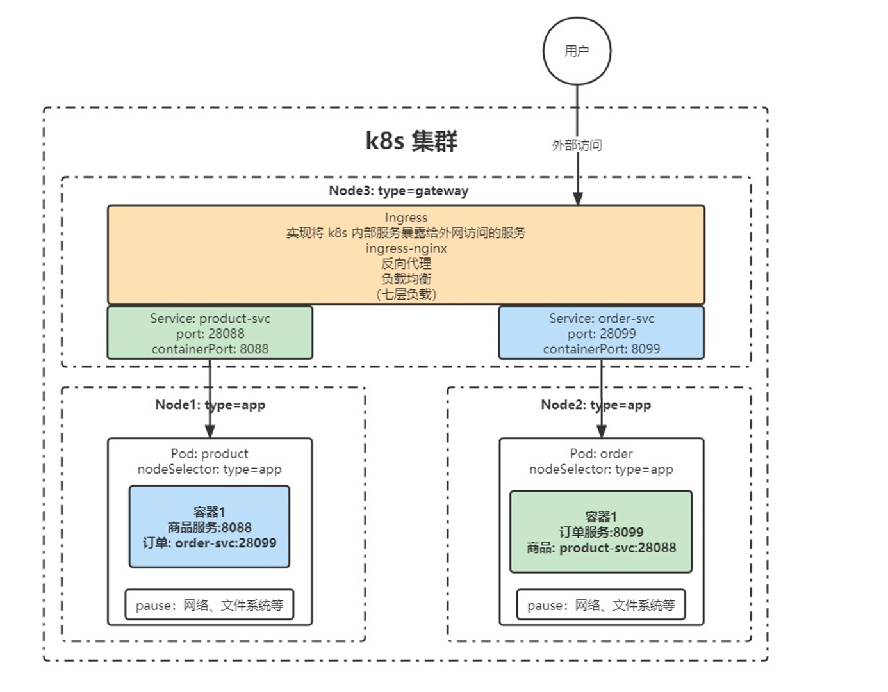3. 搭建k8s集群
环境准备
使用centos7.6版本部署k8s。
| 主机名 | ip | 安装工具 |
|---|---|---|
| master（cpu核心数要求大于2） | 192.168.88.101 | docker、kubeadm、kubelet、kubectl、flannel |
| node1 | 192.168.88.129 | docker、kubeadm、kubelet、kubectl、flannel |
| node2 | 192.168.88.103 | docker、kubeadm、kubelet、kubectl、flannel |
如果虚拟机是克隆的，ip会一样，需要修改ip地址。
master节点
关闭防火墙、关闭swap分区，加载 ip_vs 模块，直接全部复制
1 | # 关闭防火墙 |
修改节点ip
1 | vim /etc/sysconfig/network-scripts/ifcfg-ens33 |
文件添加的内容，此处设置master的ip为192.168.88.101。
子网掩码参考vmware的虚拟网络编辑器（编辑页面打开，选择VMent8后找到NAT设置），想要统一的话可以设置此处的子网掩码和网关，或者用自己的
1 | IPADDR="192.168.88.101" |
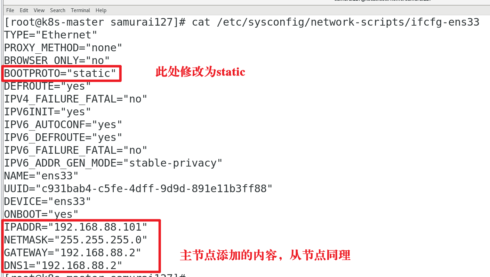
重启网卡
1 | systemctl restart network |
可以看到ip已经更新了
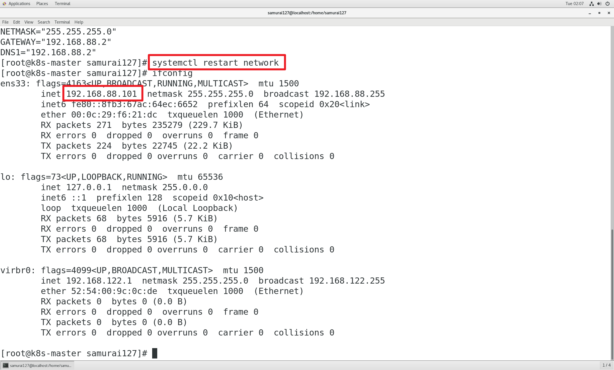
修改主机名
切换root用户才有修改主机名的权限，su root修改即可，然后执行：
1 | hostnamectl set-hostname k8s-master |
执行后使用bash命令刷新一下就行了
1 | bash |
node从节点
和master同理操作，需要完成主从节点的配置再往下做
所有节点修改hosts文件
1 | vim /etc/hosts |
打开后添加内容，k8s-master，node1，node2是我给主节点和从节点取的主机名，改成自己取的
1 | 192.168.88.101 k8s-master |
调整内核参数
1 | cat > /etc/sysctl.d/kubernetes.conf << EOF |
其他问题（finalshell无法远程连接VMware）
VMware中VMnet1或VMnet8 都无法勾选下方的”将主机虚拟适配器连接到此网络“
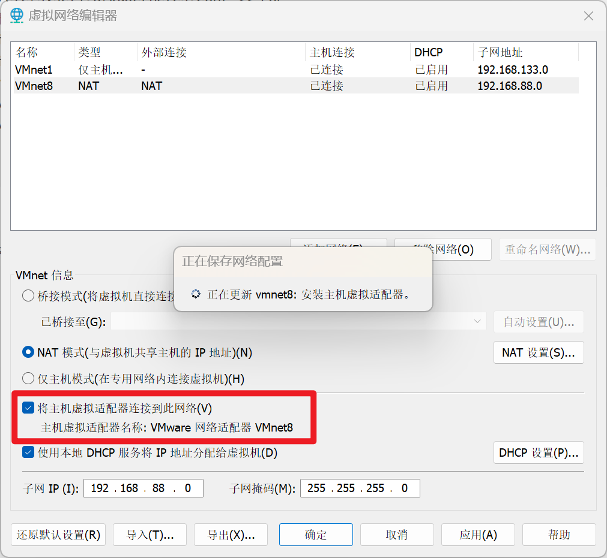
参考文档：解决！！！VMware中VMnet1或VMnet8 都无法勾选下方的–” 将主机虚拟适配器连接到此网络“或 勾选成功却安装主机虚拟适配器失败等问题_将主机虚拟适配器连接到此网络无法勾选-CSDN博客
安装docker
需要先装docker，后续配置kubeadm、kubelet和kubectl时还需要修改docker的配置文件
这里建议即使装过了也重新装，不用担心镜像丢失
参考博客：CentOS7部署docker
所有节点安装kubeadm、kubelet和kubectl
使用阿里云镜像定义kubernetes源安装镜像
运行命令前要切换root用户
1 | # 定义kubernetes源 |
注意事项
如果漏掉了docker是无法启动的
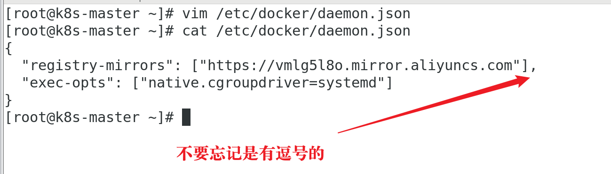
部署k8s-master（搭建k8s集群）
正常部署流程
注意这里不要清屏，要记录token！！
注意这里不要清屏，要记录token！！
注意这里不要清屏，要记录token！！
master节点运行，注意修改地址为master节点的ip，我的master的ip是192.168.88.101
1 | kubeadm init \ |
1）下载页面
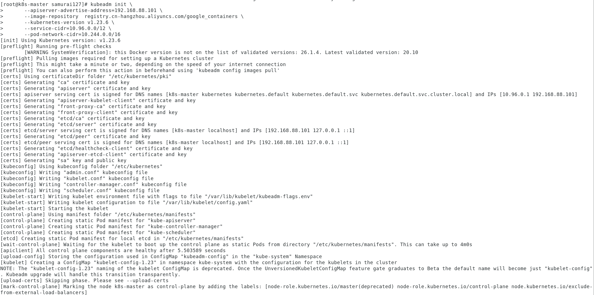
安装成功后应该有如下提示：
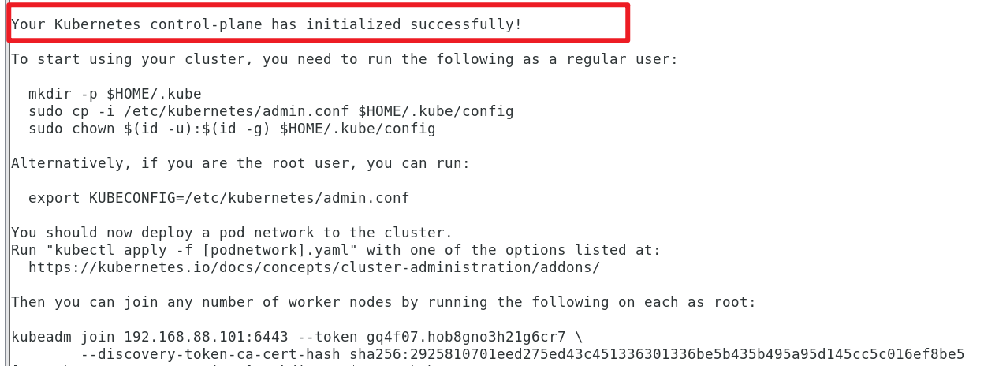
可以看到下载成功后有如下信息，此处需要记录
1 | Then you can join any number of worker nodes by running the following on each as root: |
2）运行界面
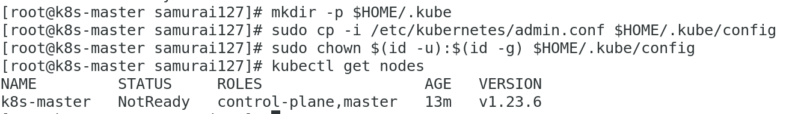
下载失败的解决方案
类似于如下报错信息：阿里源拉取镜像失败（总之都是由于镜像仓库的问题拉取失败，下边的报错信息并非我亲自遇到的，因为虚拟机的报错信息被刷掉了）
1 | [preflight] Pulling images required for setting up a Kubernetes cluster |
如果下载失败，这里提供两个解决方案：
第一种，复制命令一直重试，直到下载成功。我用的是这个方案，可能阿里的镜像不稳定。
第二种，失败后查看docker的镜像和kubeadm的镜像，可以看到还差了什么
1 | # 查看kubeadm所需要镜像 |
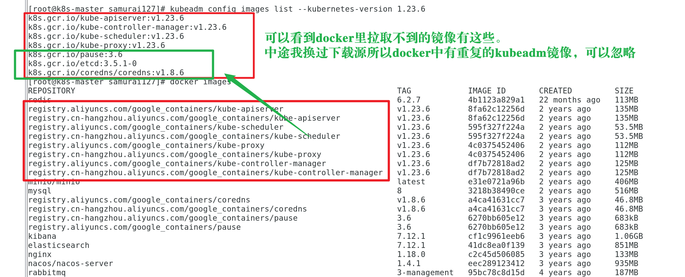
主要是使用dokcer再拉取一下缺少的镜像。
加入 Kubernetes Node（从节点操作）
在master安装成功后我们都会有一个token，比如我的是gq4f07.hob8gno3h21g6cr，此处需要修改成自己的token和master的IP。
1 | Then you can join any number of worker nodes by running the following on each as root: |
获取Master节点的token和证书
如果初始化的 token 不小心清空了，可以通过如下命令获取或者重新申请
1 | # 如果 token 已经过期，就重新申请 |
获取 –discovery-token-ca-cert-hash 值，得到值后需要在前面拼接上 sha256
1 | openssl x509 -pubkey -in /etc/kubernetes/pki/ca.crt | openssl rsa -pubin -outform der 2>/dev/null | \ |
正常流程
执行命令：
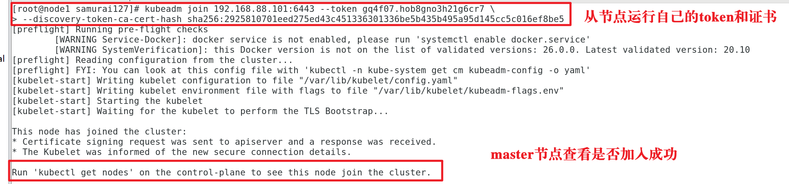
master节点执行命令kubectl get nodes可以看到node1已经添加成功了
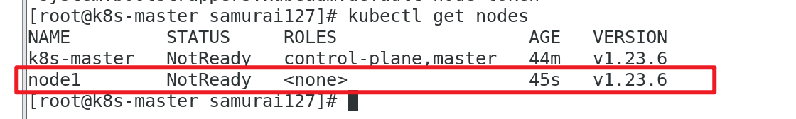
部署 CNI 网络插件（k8s部署flannel）
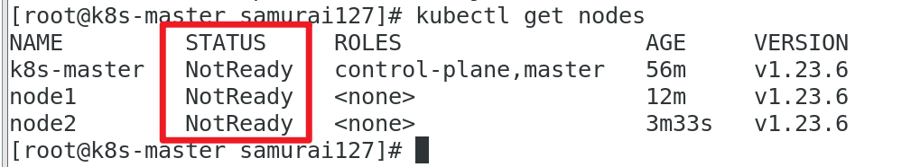
为了让三个节点ready起来，三个东西不可少。
文件可以找我要，或者用网盘下载。flannel.tar包解压后用docker把镜像拿到手，解压出来有这些
通过百度网盘分享的文件：k8s部署flannel
链接：https://pan.baidu.com/s/1A_A57YeyTL_mDjQe0ffQOw?pwd=1234
提取码：1234
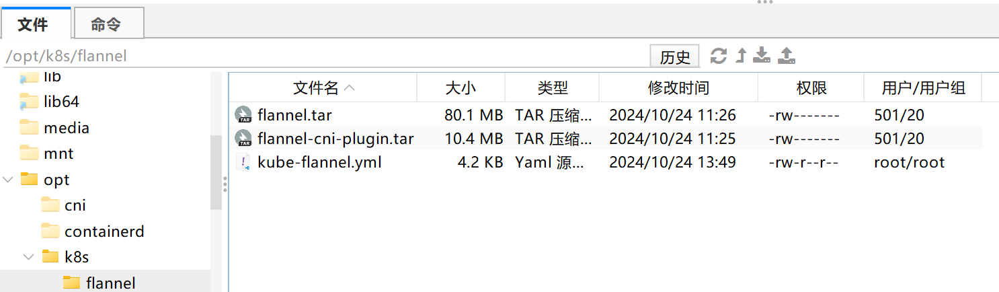
1 | # 解压文件，解压得到的东西如上图，一个flannel.tar包含flannel.tar,flannel-cni-plugin.tar文件，yml文件不在里面 |
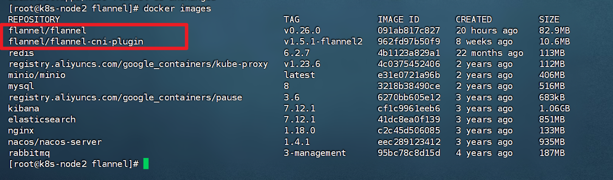
弄出来以后运行yml文件即可
1 | kubectl apply -f kube-flannel.yml |
三个节点重复上述工作，正常结果如图：
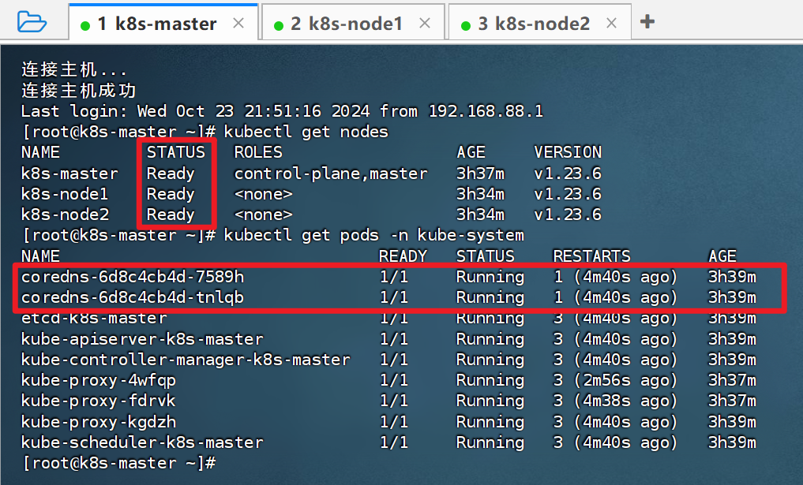
集群测试
1 | # 两个节点操作 |
4. Kubectl命令行工具常用命令
Kubernetes（K8s）常用命令大全：熟练编排更完美-腾讯云开发者社区-腾讯云
5. Pod
pod配置文件
基本思路：
- 通过
kubectl create deployment <具体镜像>实现自动创建部署，deploy部署成功后会自动创建对应pod。在进行暴露端口后可以根据ip+端口号访问对应服务，这里说的就是上一节进行集群测试的方式； - 采用创建yml文件+
kubectl apply -f xxx.yml进行创建pod。
方式二针对方式一的国内当前无法拉取镜像的问题，yml文件的写法参考第二篇k8s博客。
关于yml文件是否需要手写：在VSCode中提供一个插件kubernetes support，可生成yml文件。
这里提供一份参考的nginx的yml文件：
1 | apiVersion: v1 # api 文档版本 |
探针技术
StartupProbe（容器启动前）
k8s 1.16 版本新增的探针，用于判断应用程序是否已经启动了。
当配置了 startupProbe 后，会先禁用其他探针，直到 startupProbe 成功后，其他探针才会继续。
作用：由于有时候不能准确预估应用一定是多长时间启动成功，因此配置另外两种方式不方便配置初始化时长来检测，而配置了 statupProbe 后，只有在应用启动成功了，才会执行另外两种探针，可以更加方便的结合使用另外两种探针使用。
1 | startupProbe: |
LivenessProbe（容器启动后）
用于去探测容器运行时是否挂掉，挂掉则进行重启操作，即：如果探测失败，kubelet 会根据配置的重启策略进行重启，若没有配置，默认就认为容器启动成功，不会执行重启策略。
1 | livenessProbe: |
ReadinessProbe（容器启动后）
用于探测容器内的程序是否健康，它的返回值如果返回 success，那么就认为该容器已经完全启动，并且该容器是可以接收外部流量的（成功后才允许外部发送请求）。
1 | readinessProbe: |
生命周期
1 | lifecycle: |
6. 资源调度
label和selector
label
当我们给一组对象，比如有10个pod，打上了不同的标签之后，当我们要选择其中的部分，或者全部作为使用目标的时候，就可以使用label selector来实现这个操作，标签选择器中指定具体的过滤的条件，然后，就能在10个pod中过滤出满足我们要求的这些po
在yml文件中可以设置label（往上翻），临时添加也可以通过kubectl命令实现
1 | # 查看pods的label |
selector
在各对象的配置 spec.selector 或其他可以写 selector 的属性中编写，应用于selector匹配label
1 | # 匹配单个值，查找 app=hello 的 pod |
deployment
deployment => ReplicaSet => Pod，一个部署存在一个副本管理和多个pod
创建、更新、回滚、暂停更新略
1 | apiVersion: apps/v1 # deployment api 版本 |
StatefulSet
pv：存储卷
pvc：pv和pod之间的组件，即：volumeClaimTemplate
sts：StatefulSet的缩写
svc：service，即：Headless Service
创建于扩缩容
1 |
|
1 | # 扩容 |
灰度发布
选择一部分用户体验新版本，如果没问题再全量推。相当于打游戏的时候受邀参加新版本的体验服，如果体验服机制过于三体人设计或者莫名其妙的bug，就进行修复，修复完成至无bug或机制平衡后再上线正式服。
利用滚动更新中的 partition 属性，可以实现简易的灰度发布的效果
例如我们有 5 个 pod，如果当前 partition 设置为 3，那么此时滚动更新时，只会更新那些 序号 >= 3 的 pod
利用该机制，我们可以通过控制 partition 的值，来决定只更新其中一部分 pod，确认没有问题后再主键增大更新的 pod 数量，最终实现全部 pod 更新
删除操作
1 | # 删除 StatefulSet 和 Headless Service |
HAP自动扩缩容
略
7. 服务发布
service
外部访问pod
在使用kubectl create deployment <deploy-name>命令进行部署时，是可以看到deploy会自动创建pod和service，而service在自动创建出来的时候会自带一个endpoint。
参考内容：k8s四层负载均衡之Service_kubectl service与node负载均-CSDN博客
大致流程：service => endpoint => pod，service找到对应的endpoint后，endpoint通过记录ip和Kube-proxy路由到pod进行提供pod中记录的服务。
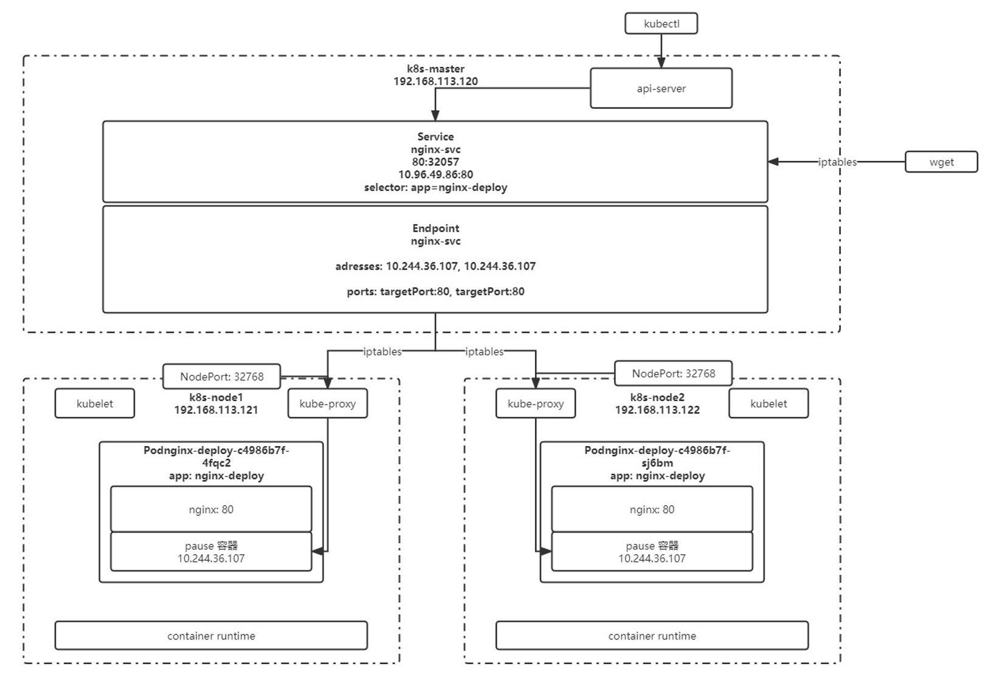
为什么可以通过虚拟机ip+端口号访问到pod提供的服务？
在k8s中存在的ip类型有三种：
- 节点网络，即虚拟机ip；
- pod的ip；
- service的ip。
service的类型：
- ClusterIP 类型：
- 如果 Service 是
ClusterIP类型，你只能在集群内部访问它。尝试从集群外部访问会失败，因为ClusterIP不会路由到集群外部的流量。
- 如果 Service 是
- NodePort 类型：
- 如果 Service 是
NodePort类型，你可以从集群外部通过任意节点的 IP 地址加上指定的 NodePort 端口号来访问 Service。例如，如果 NodePort 是 30001，你可以访问<NodeIP>:30001来访问 Service。
- 如果 Service 是
- LoadBalancer 类型：
- 如果 Service 是
LoadBalancer类型，并且你正在云服务提供商的环境中运行 Kubernetes 集群，那么通常会有一个外部负载均衡器被创建并分配一个公共 IP 地址。你可以通过这个公共 IP 地址加上 Service 的端口号从集群外部访问 Service。
- 如果 Service 是
- ExternalName 类型：
- 如果 Service 是
ExternalName类型，直接访问 Service 的 IP 和端口可能不会按预期工作，因为ExternalName类型的 Service 主要是通过 DNS CNAME 记录来将请求转发到一个外部的服务。没有相应的 DNS 配置，直接访问 IP 和端口可能不会有任何响应。
- 如果 Service 是
当我们使用kubectl create deployment <deploy-name>的时候，还需要向外暴露一个端口，才能访问到service或者是k8s集群内部。除了在yml文件中指定service的类型，也可以使用expose命令进行向外暴露端口：
1 | Kubectl expose deployment <deployment-name> --port=80 --target-port=9376 --type=NodePort |
由于是向外暴露端口，所以必须指定类型为NodePort。如果不指定类型，则默认采用的是clusterIP，此时不会向外提供服务，也就是说，NodePort类型可以采用虚拟机ip+向外暴露的端口进行访问pod，而后者则无法通过外部进行访问。
假设我的虚拟机ip为192.168.88.101，则此时访问192.168.88.101:9376是可以拿到对应服务的。
上边提到的是使用kubectl进行向外暴露的方式，第二种也可以通过给deployment指定service进行向外暴露。此时labels.app的标签需要对应上deployment的标签。
1 | apiVersion: v1 |
pod访问外部服务
为什么需要pod访问外部服务？
在 Kubernetes 集群中，Pod 访问外部服务是一个常见的需求，尤其是在需要连接到集群外部的数据库或 API 服务时。
实现方式：
编写 service 配置文件时，不指定 selector 属性，此时不会自动生成endpoint，自己创建 endpoint时指定需要访问的服务ip；或者是使用externalname指定访问的域名。
1 | # endpoint 配置： |
ingress
部署ingress-nginx
参考文档：Ingress | Kubernetes
首先安装ingress：
1 | # 任意目录下载helm，用魔法 |
安装nginx-ingress：
1 | # 添加仓库 |
下载包时如果安装失败可以尝试直接在浏览器下载，然后再用finalshell上传文件
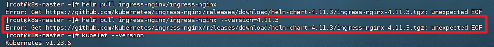
浏览器访问：
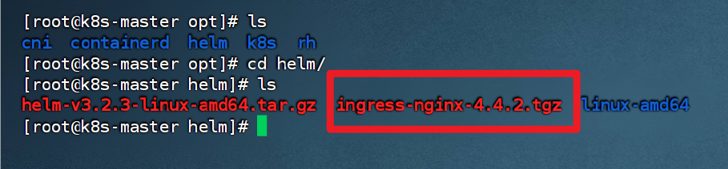
1 | # 解压 |
ingress-nginx目录下有values.yaml文件，打开它修改配置
1 | # 修改 values.yaml |
打开bash控制台，假设在master节点配置：
1 | # 为 ingress 专门创建一个 namespace |
8. 配置管理、持久化存储
配置管理
ConfigMap
为什么deployment还需要configmap进行配置管理
- 进行配置与代码分离
- 在配置经常需要修改的情况下，修改configmap可以避免重新部署deployment
- 减少构建镜像的次数
- 支持动态更新，无需停止pod进行配置更新
创建ConfigMap
通过kubectl create cm -h 查看创建方式
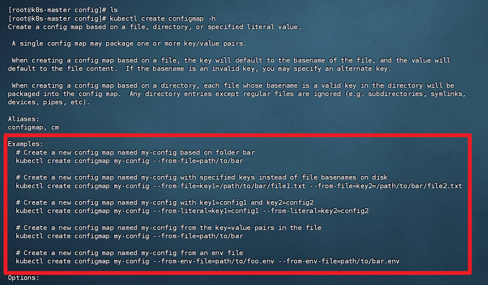
使用configmap：
假设存在cm的配置如下：此处已经配置db.properties和redis.properties的账号密码
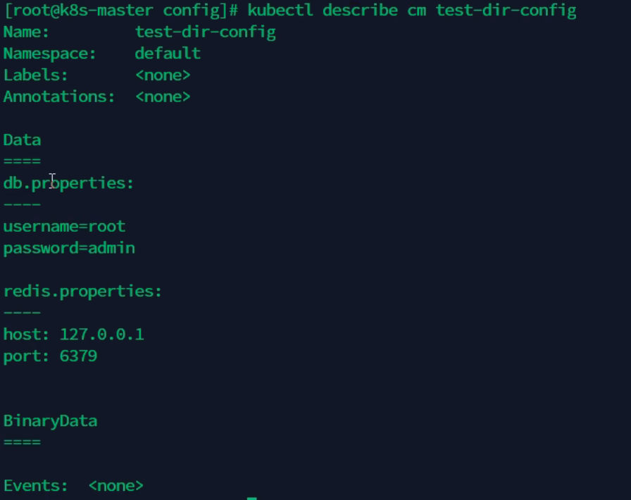
然后再编写pod.yml文件
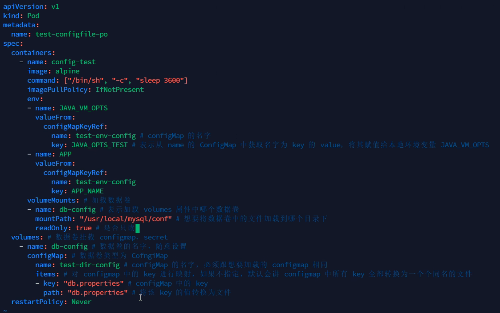
执行命令apply命令去创建pod
1 | Kubectl apply -f pod.yml |
此时进入容器内查看后挂载的数据卷，可以看到确实有内容
1 | kucectl exec -it <pod容器名> --sh |
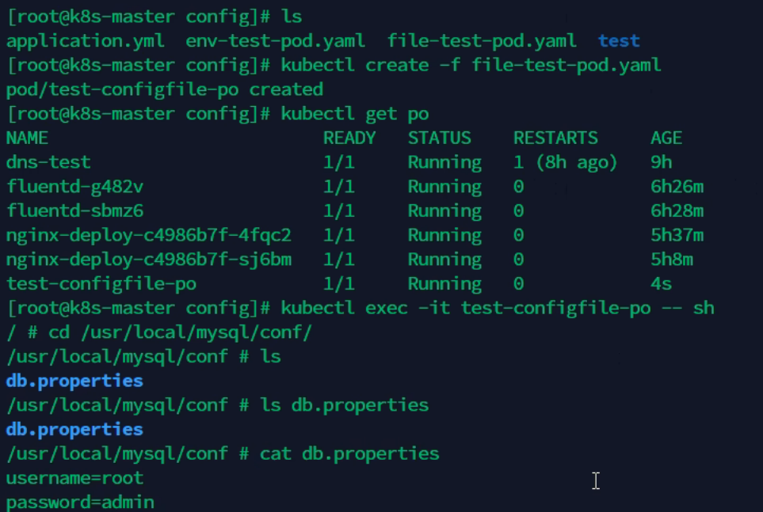
加密（软加密）配置secret
创建secret
1 | # 查看创建方式 |
使用secret：
基于服务器的harbor去创建secret
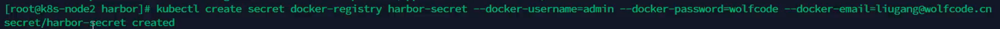
pod通过使用secret连接harbor，从harbor拉取镜像
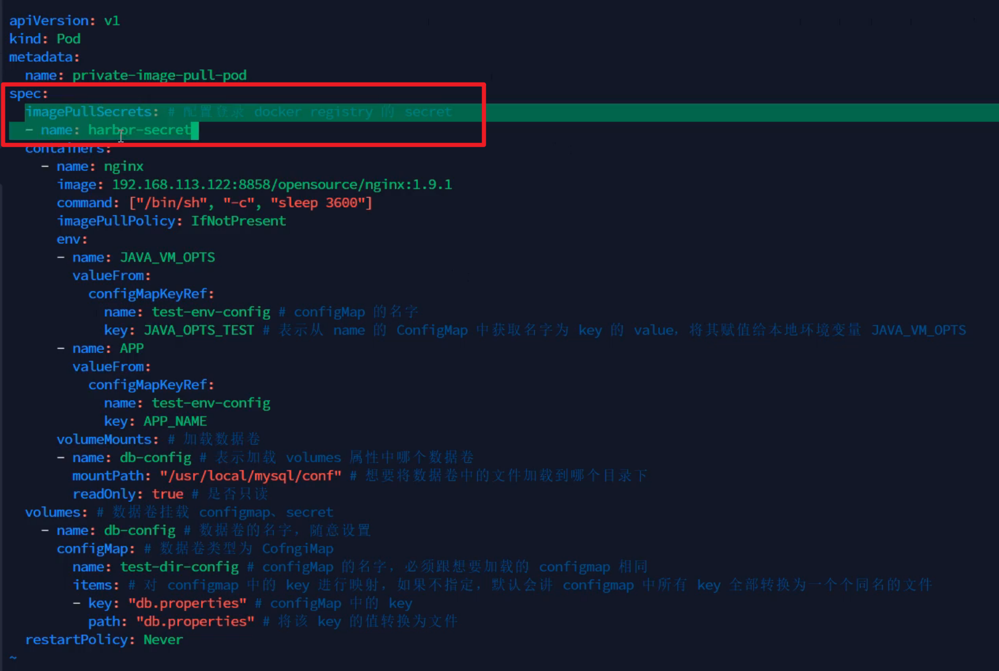
SubPath
使用 ConfigMap 或 Secret 挂载到目录的时候，会将容器中源目录给覆盖掉，此时我们可能只想覆盖目录中的某一个文件，但是这样的操作会覆盖整个文件，因此需要使用到 SubPath
配置方式：
- 定义 volumes 时需要增加 items 属性，配置 key 和 path，且 path 的值不能从 / 开始
- 在容器内的 volumeMounts 中增加 subPath 属性，该值与 volumes 中 items.path 的值相同
1 | containers: |
持久化存储
HostPath
将节点上的文件或目录挂载到 Pod 上，此时该目录会变成持久化存储目录，即使 Pod 被删除后重启，也可以重新加载到该目录，该目录下的文件不会丢失；之前的configmap是k8s内集群文件挂载到容器内部的目录，而现在是直接关联宿主机的文件。
1 | apiVersion: v1 |
在configmap中，volumes指定名字后接下来写的是 “-configmap”的配置，而这里是hostpath。
检查类型：
- 空字符串：默认类型，不做任何检查
- DirectoryOrCreate：如果给定的 path 不存在，就创建一个 755 的空目录
- Directory：这个目录必须存在
- FileOrCreate：如果给定的文件不存在，则创建一个空文件，权限为 644
- File：这个文件必须存在
- Socket：UNIX 套接字，必须存在
- CharDevice：字符设备，必须存在
- BlockDevice：块设备，必须存在
EmptyDir
EmptyDir应用于一个pod中有多个容器运行时的时候，做容器运行时之间的文件共享，在yaml文件中指定“emptyDir: {}”即可，因为不需要添加任何数据进目录或文件中，只需要达到一个文件共享的目的。当 Pod 被删除时， emptyDir 也会被删除。
1 | apiVersion: v1 |
NFS
作用于不在同一个pod中的容器运行时共享数据（可以用HostPath）或是不同服务器的容器运行时共享数据。
安装NFS
Node1安装NFS：
1 | # 安装 nfs |
此时在只读文件中添加一个文件：
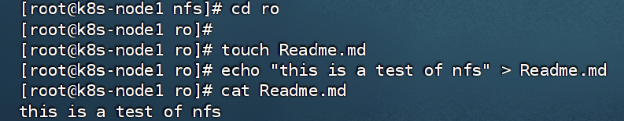
1 | # 到其他测试节点安装 nfs-utils 并加载测试 |
在node1里面创建一个文件，然后输入内容：after nfs , node1 and master get connetion.
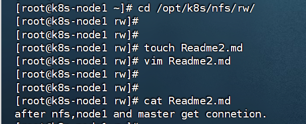
返回master节点后发现已经自动添加文件，说明建立连接成功
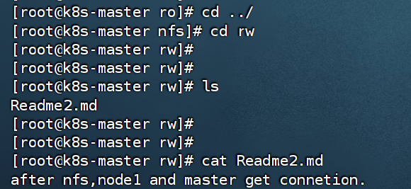
同理可以挂载只读目录ro
1 | mount -t nfs 192.168.88.129:/opt/k8s/nfs/ro /mnt/nfs/ro |
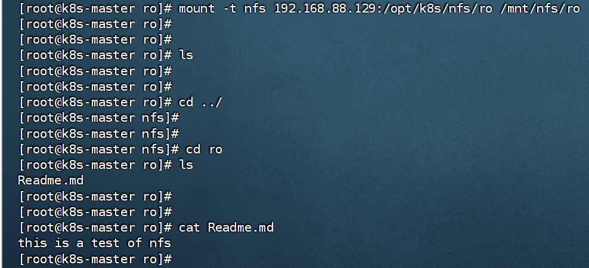
NFS配置文件
1 | apiVersion: v1 |
PV与PVC
PV与PVC
持久卷（PersistentVolume，PV） 是集群中的一块存储，可以由管理员事先制备， 或者使用存储类（Storage Class）来动态制备。 持久卷是集群资源，就像节点也是集群资源一样。PV 持久卷和普通的 Volume 一样， 也是使用卷插件来实现的，只是它们拥有独立于任何使用 PV 的 Pod 的生命周期。 此 API 对象中记述了存储的实现细节，无论其背后是 NFS、iSCSI 还是特定于云平台的存储系统。
持久卷申领（PersistentVolumeClaim，PVC） 表达的是用户对存储的请求。概念上与 Pod 类似。 Pod 会耗用节点资源，而 PVC 申领会耗用 PV 资源。Pod 可以请求特定数量的资源（CPU 和内存）；同样 PVC 申领也可以请求特定的大小和访问模式 （例如，可以要求 PV 卷能够以 ReadWriteOnce、ReadOnlyMany 或 ReadWriteMany 模式之一来挂载，参见访问模式）。
参考内容：k8s之PV、PVC、StorageClass详解、存储类 | Kubernetes
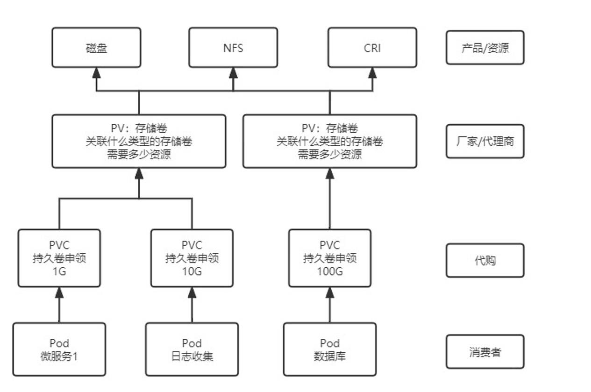
为什么需要pv和pvc
- 存储持久化，在pod销毁或重建后不希望数据被销毁，而pv和pvc独立于pod，因此可以实现持久化；
- 通过定义回收策略可以定义数据资源的生命周期；
- 动态存储供应，可以设置特定大小供pv访问pvc；
- 提供多种存储类型的支持，如本地磁盘、NFS、云存储
实现pv和pvc
创建pv，pv的yaml文件：
1 | apiVersion: v1 |
创建pvc，pvc的yaml文件：
1 | apiVersion: v1 |
通过kubectl apply -f pvc.yml和kubectl apply -f pv.yml创建对应资源，由于storageClassName是一致的，此时pv和pvc已经完成绑定
绑定pod和pvc
1 | # 在 pod 的挂载容器配置中，增加 pvc 挂载 |
动态申领
k8s 中提供了一套自动创建 PV 的机制，就是基于 StorageClass 进行的，通过 StorageClass 可以实现仅仅配置 PVC，然后交由 StorageClass 根据 PVC 的需求动态创建 PV。
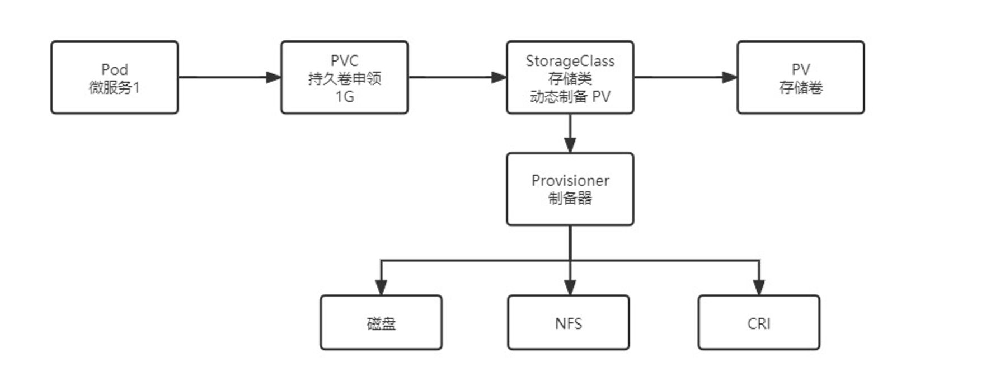
实操太麻烦了这里就不写了，参考：3.5.14 配置与存储-存储类：动态创建NFS-PV案例 哔哩哔哩_bilibili
9. 高级调度
cronjob任务调度
在 k8s 中周期性运行计划任务，与 linux 中的 crontab 相同
注意点：CronJob 执行的时间是 controller-manager 的时间，所以一定要确保 controller-manager 时间是准确的，另外 cronjob
配置文件
1 | apiVersion: batch/v1 |
初始化容器initC
在真正的容器启动之前，先启动 InitContainer，在初始化容器中完成真实容器所需的初始化操作，完成后再启动真实的容器。
相对于 postStart 来说，首先 InitController 能够保证一定在 EntryPoint 之前执行，而 postStart 不能，其次 postStart 更适合去执行一些命令操作，而 InitController 实际就是一个容器，可以在其他基础容器环境下执行更复杂的初始化功能。
在 pod 创建的模板中配置 initContainers 参数：
1 | spec: |
污点与容忍度
参考内容：污点和容忍度 | Kubernetes